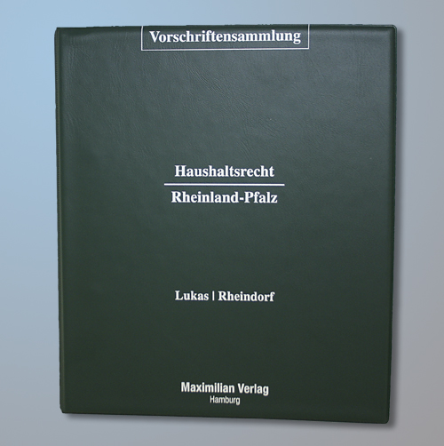

Haushaltsrecht des Bundes | einfach erklärt | ibau
 Aufträge nach Branche Aufträge nach Ort Services und Leistungen Akademie Über ibau Kontakt Infos anfordern Login ibau Xplorer | Präsentation | Support | Fastviewer Sie befinden sich hier: Startseite Akademie Glossar Haushaltsrecht
Haushaltsrecht
Das Haushaltsrecht regelt im staatlichen Bereich den Vorgang vom Aufstellen eines Haushaltsplans über seine Festlegung bis hin zum Vollzug und der Kontrolle. Haushaltsrechtliche Vorschriften gelten für den gesamten Bereich der öffentlichen Hand, von einzelnen Gebietskörperschaften über Kreise, Länder bis hin zum Bund und zum Staat. Dementsprechend gibt es einen Gemeindehaushalt, einen Kreishaushalt, einen Landeshaushalt sowie einen Bundes- und einen Staatshaushalt. Auf alle diese Haushalte sind die Vorschriften des Haushaltsrechts anzuwenden. Daneben gelten sie auch für öffentlich-rechtliche Anstalten (etwa beim Rundfunk) und für alle öffentlichen Körperschaften.
Finden Sie jetzt passende Aufträge in Ihrer Region
Inhaltsverzeichnis
Haushaltsrecht als Teil des Planungsrechts Notwendigkeit des Haushaltsrechts Grundlagen des Haushaltsrechts in Deutschland HaushaltsgrundsätzeHaushaltsrecht als Teil des Planungsrechts
Nach juristischer Definition gehört das Haushaltsrecht zum Planungsrecht. Das Erstellen des Haushalts ist damit nach der geltenden Haushaltsrecht-Definition kein Prozess, sondern ein gesetzlicher Vorgang (anders als etwa bei einem Wirtschaftsunternehmen, das seine Wachstumsziele und Umsätze für das kommende Jahr plant).
Planerische Freiheit
Die sogenannte "planerische Freiheit", die ein Unternehmer bei seinem Wirtschaftsgebaren hat, gilt für Kommunen, Länder und den Bund sowie für alle öffentlichen Körperschaften damit nicht. Die Erklärung im Haushaltsrecht: Wie und für welche Aufgaben die Mittel verwendet werden müssen, ist allein durch gesetzlich verankerte Aufgabenstellungen und gegebenenfalls durch demokratisch entstandene Vereinbarungen von vornherein festgelegt. Es besteht für den gesamten öffentlichen Bereich also eine strenge Planbindung.
Haushaltssatzung als Ergebnis
Am Ende der Haushaltserstellung steht im Bereich der öffentlichen Verwaltung ein Beschluss. Wenn der Haushalt von der gesetzgebenden Stelle (Legislative) beschlossen ist, ist er für das kommende Haushaltsjahr gültig und hat Gesetzescharakter. Die gesetzliche Definition dafür lautet "Haushaltssatzung". Die Haushaltssatzung ist die rechtliche Grundlage für die spätere Umsetzung (den Vollzug) des Haushalts.
Einzelne Gesetze im Haushaltsrecht
Zum Haushaltsrecht gehören sowohl das Haushaltsgrundsätzegesetz als auch die Bundeshaushaltsordnung, das Stabilitäts- und Wachstumsgesetz sowie das Bundesrechnungshofgesetz. Auf Kommunal- und Länderebene gelten zusätzliche Vorschriften in den einzelnen Gemeindeordnungen und Landeshaushaltsgesetze.
Die Grundlagen des Haushaltsrechts sind zudem im Grundgesetz verankert.
Notwendigkeit des Haushaltsrechts
Sowohl der Bund als auch die einzelnen Länder und Gebietskörperschaften sind zur Erfüllung bestimmter Aufgaben gesetzlich oder durch Vereinbarungen verpflichtet. Um diese Aufgaben erfüllen zu können, sind finanzielle Mittel notwendig. Die Gewinnung der notwendigen Mittel für die Aufgaben erfolgt über Steuereinnahmen. Demnach muss sichergestellt werden, dass ausreichend Steuermittel eingenommen werden, um die gesetzlich verlangten Aufgaben erfüllen zu können.
Verwendung der Steuergelder ist immer vorab fest geregelt
Die Regelung wird durch die gesetzlich festgelegte Definition für den Ablauf des gesamten Planungsprozesses erreicht. Aufgrund der bestehenden strengen Planbindung muss die Mittelverwendung genau festgelegt werden und Gesetzescharakter haben, damit jede öffentliche Verwaltung die vorgesehenen Aufgaben tatsächlich erfüllt.
ibau Xplorer – das VertriebstoolFinden Sie alle relevanten öffentlichen, privaten und gewerblichen Ausschreibungen in Deutschland. Erhalten Sie genau die Aufträge, die zu Ihrem Angebot passen.
Jetzt Xplorer kennenlernen Lukrative Aufträge findenSuchen Sie jetzt nach interessanten Aufträgen. Verschaffen Sie sich einen Überblick über alle relevanten Ausschreibungen passend zu Ihrer Branche und Ort.
Jetzt Aufträge finden Tipps & TricksIhre persönlichen Kontakte lassen sich optimal zur Auftragsakquise nutzen. Sichern Sie sich unser kostenloses E-Book und bauen Sie ein profitables Netzwerk auf.
Kostenloses E-Book erhaltenGrundlagen des Haushaltsrechts in Deutschland
Alle Gebietskörperschaften - von der Gemeinde bis hin zu Bund und Staat - sind nach der Haushaltsrecht Definition zur Erstellung eines Haushalts für das kommende Haushaltsjahr verpflichtet. Dabei kommt ein festgelegter Planungsprozess zum Einsatz, der insgesamt länger dauert als ein Haushaltsjahr. Auch darin unterscheidet sich das Haushaltsrecht von den Definitionen für die Planung eines Wirtschaftsunternehmens.
Gesetzlich festgelegte Planungsschritte
Der Planungsprozess beim Haushalt umfasst grob betrachtet vier Schritte:
Aufstellung des Haushalts Gesetzgebungsverfahren für den Haushalt Ausführung des Haushalts Kontrolle des HaushaltsNach dem letzten Schritt beginnt der Prozess wieder von vorne. Der erste Schritt beginnt bereits lange vor dem eigentlichen Haushaltsjahr. Hier spielen eine Auswertung der Wirtschaftsdaten und eine Schätzung der zu erwartenden Steuereinnahmen die wichtigste Rolle.
Politische Einwirkungsmöglichkeiten auf die Steuerverwendung
Im Gesetzgebungsverfahren kann die Verwaltung auf die Gestaltung des Haushalts einwirken und individuelle politische Schwerpunkte setzen. Auf Bundesebene besitzt nur der jeweils amtierende Bundeskanzler die Kompetenz, solche politischen Richtlinien vorzugeben, die dann im Gesetzgebungsverfahren von der Bundesregierung diskutiert und demokratisch beschlossen werden. Der Finanzminister hat auf dieser Ebene keine richtliniengebenden Kompetenzen - seine Aufgabe beschränkt sich rein auf die Verwaltung der Mittel.
Haushaltsgrundsätze
Bei der Haushaltserstellung sind die sogenannten Haushaltsgrundsätze anzuwenden. Sie sind im Grundgesetz verankert. Für den Bund gilt in diesem Bereich das Haushaltsgrundsätzegesetz des Bundes (HGrG) und die Bundeshaushaltsordnung. Für die Länder und Gemeinden finden sich die Detailregelungen zu den Haushaltsgrundsätzen in den jeweiligen Landeshaushaltsordnungen (LHO) und den Gemeindeordnungen (GemO).
Verbindliche Haushaltsgrundsätze
Insgesamt gibt es zehn verbindliche Grundsätze, auf denen die Detailregelungen für die Haushaltsgrundsätze beruhen:
der Grundsatz der Einheit und Vollständigkeit (alle Einnahmen und Ausgaben müssen in einem einzigen Haushaltsplan zusammengefasst sein) der Grundsatz der Öffentlichkeit (es muss Transparenz für die interessierten Bürger gegeben sein) der Grundsatz der vorherigen Bewilligung (dafür ist auch ein rechtzeitiger Beginn der Aufstellung nötig) der Grundsatz der Jährlichkeit (Haushaltspläne müssen immer jährlich aufgestellt werden der Grundsatz der Sparsamkeit und Wirtschaftlichkeit (vorherige Wirtschaftlichkeitsuntersuchungen, möglichst minimaler Mitteleinsatz bei maximalem Effekt, Untersuchung der Risikoverteilung) der Grundsatz der Gesamtdeckung (Einnahmen dürfen nicht zweckgebunden sein) der Grundsatz der Fälligkeit (im Haushalt dürfen nur solche Ausgaben berücksichtigt werden, die auch im entsprechenden Haushaltsjahr fällig sind, keine zukünftigen Ausgaben) der Grundsatz der Haushaltswahrheit und Haushaltsklarheit (ausgeglichener Haushalt und klare Gliederung bei der Darstellung) der Grundsatz des Bruttoprinzips (Einnahmen und Ausgaben müssen getrennt voneinander berechnet werden der Grundsatz der sachlichen Spezialisierung (Einnahmen und Ausgaben werden einzeln und voneinander getrennt veranschlagt, je nach Entstehungsgrund, Zweck oder Zeitraum, in dem sie fällig sind)Von diesen Grundsätzen darf keine öffentliche Verwaltung abweichen, sie darf sie lediglich um Detailregelungen erweitern.
Verletzungen der Haushaltsgrundsätze
Werden diese Grundsätze nicht oder nicht ausreichend beachtet, entsteht nach theoretischer rechtlicher Definition zwar der Tatbestand der "Haushaltsuntreue", dieser Tatbestand kann allerdings nicht einfach nach dem Strafgesetzbuch geahndet werden. Auch die beim Verstoß gegen die Haushaltsgrundsätze getätigten Rechtsgeschäfte sind nicht automatisch nichtig, wie das in anderen Fällen nach § 134 BGB der Fall wäre. Gegen sie kann nur in besonders schweren Fällen allenfalls eine Sittenwidrigkeit (nach § 138 BGB) eingewendet werden.
Buchführung im Bereich der öffentlichen Hand
Bei den Gebietskörperschaften kommt eine besondere Form der Buchführung zum Einsatz, die Kameralistik. Wirtschaftsunternehmen verwenden dagegen die sogenannte Doppik (doppelte Buchhaltung). Abgewandelte Formen der doppelten Buchhaltung, die sogenannte "staatliche Doppik" und die "kommunale Doppik", sind nach dem HGrG für Körperschaften aber seit 2010 ebenfalls grundsätzlich zulässig, wenn die jeweilige Körperschaft das durch ein entsprechendes Gesetz beschließt.
Unterschiede in der kameralistischen Buchhaltung
Die Kameralistik oder kameralistische Buchführung ist nach ihrer Definition eine rein formale Buchhaltungsform. Im Gegensatz zur in der Wirtschaft gebräuchlichen doppelten Buchhaltung gibt es hier nur eine Einnahmen-Überschussrechnung.
Erfasst werden in der kameralen Buchhaltung nach der geltenden Definition grundsätzlich vier Spalten: Reste vom Vorjahr, das laufende Soll, das Ist und neue Reste. Damit lassen sich nicht nur Forderungen und Verbindlichkeiten erfassen, sondern auf direktem Weg auch Geldanlagen und Sachanlagen sowie Schulden und Rücklagen.
Abweichende Rechnungssysteme
Die Rechnungssysteme einiger Bundesländer und das Rechnungssystem des Bundes sind leicht abweichend vom klassischen 4-Spalten-System der Kameralistik angelegt. Wie die Rechnungssysteme auszusehen haben und wie sie angewendet werden, ist ebenfalls in einer genauen gesetzlichen Definition festgelegt.
Zurück zum Glossar Schreiben Sie uns info@ibau.de Schreiben Sie uns Ihr Anliegen und wir melden uns so schnell wie möglich bei Ihnen. Wir sind für Sie da 0800 3344355 Kostenfrei aus dem deutschen Fest- und Mobilfunknetz. Mo-Do: 08.30-17.00 Uhr · Fr: 08.30-15.00 Uhr Wir rufen Sie gern zurück Rückrufwunsch Geben Sie einfach Ihre Telefonnummer an und wir setzen uns mit Ihnen in Verbindung. AGB Datenschutz Impressum